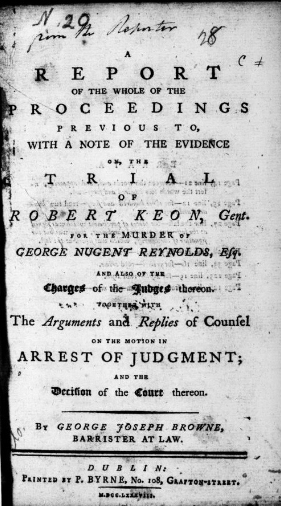
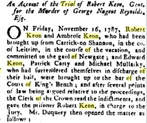
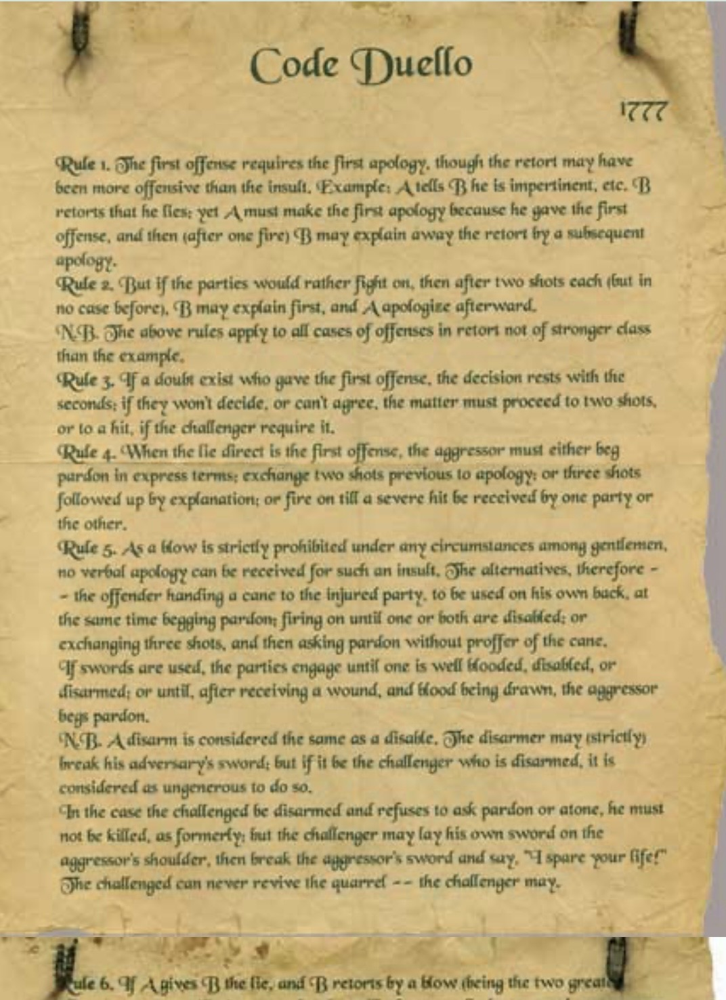
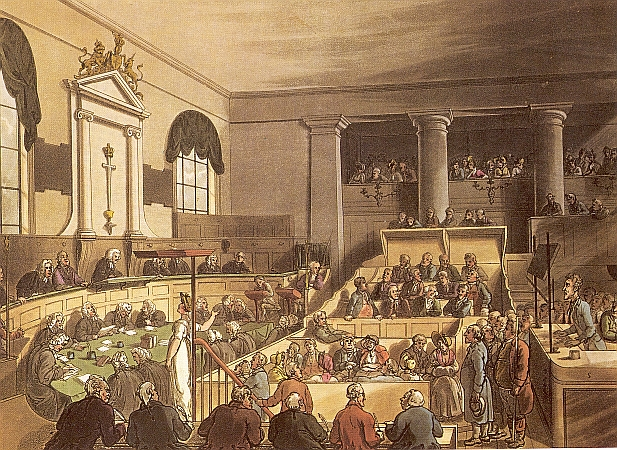

THE TRUTH OF SHEEMORE
The story of Robert Keon survives in fragments: printed trial reports, contemporary newspaper accounts and records from a world in which honour, reputation and the law could collide with fatal consequences.

The printed report of the trial of Robert Keon for the killing of George Nugent Reynolds.

A contemporary newspaper account reporting the proceedings at Robert Keon's trial.

Rules of honour and duelling from the period, revealing the formal conventions that governed insults, challenges and seconds.

An early nineteenth-century courtroom, illustrating the setting of a trial in this period.